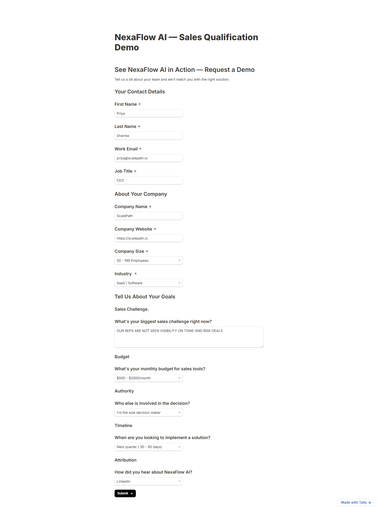
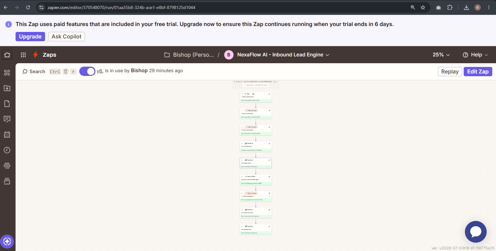
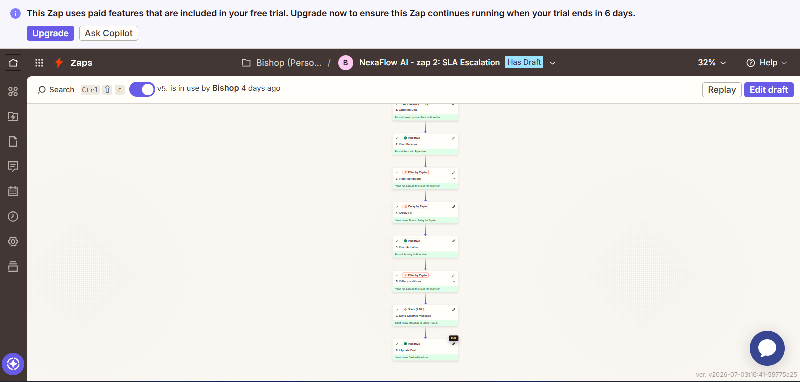
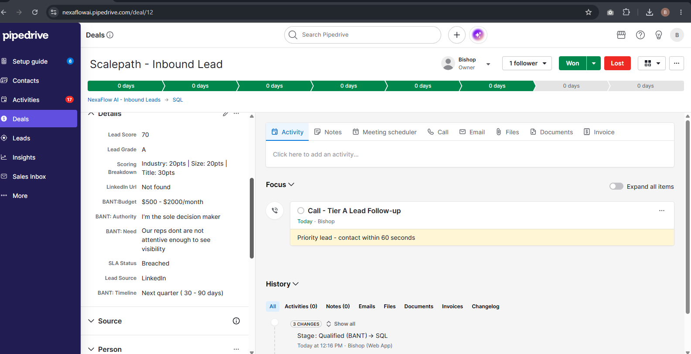

A three-pillar revenue automation system that enriches, scores, routes, and enforces accountability on every inbound lead — all before a human touches it. Built on Zapier, Pipedrive, and Slack.
Three systemic breakdowns kill revenue before a rep ever picks up the phone.
Responding within 5 minutes increases conversion by 9x. Most teams respond within 48 hours — or never. Every minute of delay is pipeline lost forever.
A VP of Sales at a 200-person SaaS company gets the same follow-up as an intern at a 5-person startup. Reps waste time on tire-kickers while hot leads go cold.
Deals advance based on rep optimism, not confirmed data. SQLs are declared without BANT verified — destroying forecast accuracy and wasting sales capacity.
The difference isn't automation — it's accountability, speed, and zero lead leakage.
Three automated pillars operating from first form submission to SQL qualification — no manual intervention required.
When a prospect submits the NexaFlow AI demo request form on Tally.so, Zapier fires instantly. The company domain is extracted and sent to Hunter.io for enrichment — returning organization data and LinkedIn URL automatically. A Person record is found or created in Pipedrive (duplicate prevention built in). A Deal is created in the NexaFlow AI — Inbound Leads pipeline with all enrichment and scoring data mapped to custom fields. A formatted Slack notification reaches the sales rep in under 60 seconds — with lead name, company, job title, score, and a direct Pipedrive deal link.
Before any deal is created, a JavaScript scoring engine runs inside Zapier. It evaluates three ICP signals and returns a numeric score, letter grade, and full scoring breakdown — all stored as Pipedrive custom fields for reporting and sales coaching later.
| Signal | Criteria | Points |
|---|---|---|
| Industry | SaaS / Tech / FinTech | +20 |
| Industry | eCommerce / Healthcare / Agency | +10 |
| Company Size | 200–500 employees | +30 |
| Company Size | 50–199 employees | +20 |
| Company Size | 10–49 employees | +10 |
| Job Title | VP / CEO / CRO / Founder | +30 |
| Job Title | Director / Head of / Revenue | +20 |
| Job Title | Manager | +10 |
| Grade A — Priority Follow-up | 60–80 pts | |
| Grade B — Standard Nurture | 35–59 pts | |
| Grade C — Standard Nurture | 0–34 pts | |
Most automation portfolios stop at the notification. This build goes further by enforcing accountability with a standalone Zap that monitors every Tier A lead after creation. If the rep doesn't log the call activity within 15 minutes, the Sales Manager receives an automatic escalation alert on Slack — and the deal is flagged as Breached for reporting.
Built entirely inside Pipedrive's native automation — no Zapier required. When a rep attempts to advance a deal to "SQL," the system checks if all four BANT fields are confirmed. If any field is empty, the deal is automatically moved back to "Qualified (BANT)" and a Task activity is created for the rep: "Complete BANT fields to advance to SQL."
This keeps qualifying enforcement inside the CRM where it belongs — not the automation layer. The gate works regardless of how a deal enters the pipeline. Every SQL is a genuinely qualified opportunity.
| BANT Field | What it confirms | Required for SQL |
|---|---|---|
| Budget | Can they afford the product? | ✓ Required |
| Authority | Are they the decision maker? | ✓ Required |
| Need | Is there a confirmed business problem? | ✓ Required |
| Timeline | When are they looking to buy? | ✓ Required |
Every tool, every step, every automation — live in production. Screenshots and test results from the real system.




Quantified impact across every pillar of the Revenue Accountability Framework.
Every tool in this build has a free tier — proving production-quality RevOps doesn't require enterprise budgets.
Every architectural decision was deliberate — not the default.
Inline JavaScript inside Code by Zapier keeps the scoring logic self-contained, readable, and maintainable without an external database or scoring service. The rules are documented and easily updated as ICP criteria evolve.
Keeping qualifying enforcement inside the CRM is the correct architectural decision. The BANT gate works regardless of how a deal enters the pipeline — not just through the Zapier flow. This is RevOps governance thinking, not just automation thinking.
A delay step inside a single Zap blocks the entire flow. A standalone Zap triggered by the SLA Status field gives independent monitoring, cleaner error handling, and allows the SLA logic to evolve separately from the lead creation logic.
Free tier, reliable domain lookup, and no rate-limit surprises for a portfolio demonstration. In a production build this would be replaced with Clearbit or Apollo.io for richer enrichment including technographic data.
I build revenue accountability systems, not just automations. NexaFlow AI demonstrates that RevOps capability is proven through systems — not years on a job title. This portfolio is the evidence.
My background in email marketing gave me a deep understanding of how data moves through a marketing stack and where the handoff between marketing and sales breaks down. NexaFlow AI is the architectural answer to that breakdown.